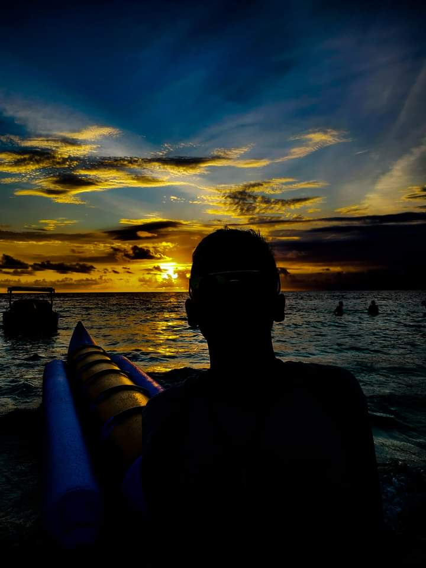

|  | ||
| NAMA LENGKAP | : | IDIL ARFANDI |
| TEMPAT/TANGGAL LAHIR | : | BANTAENG/ 21 FEBRUARI 2002 |
| ASAL DAERAH | : | KABUPATEN BANTAENG |
| ALAMAT | : | KECAMATAN EREMERASA, KABUPATAEN BANTAENG |
| JENIS KELAMIN | : | PRIA |
| PEKERJAAN | : | MAHASISWA |
| INSTITUT | : | UNIVERSITAS HASANUDDIN |
| FAKULTAS | : | FMIPA |
| JURUSAN | : |
SISTEM INFORMASI |
| MOTTO | : | BERBAHAGIA DI DUNIA DAN AKHIRAT |
| : | idilarfandi21.ia@gmail.com | |
| : | 082226791695 |
Program Studi Ilmu Komputer merupakan program studi penugasan oleh Direktorat Jenderal Pendidikan Tinggi, Kementerian Pendidikan dan Kebudayaan berdasarkan Nomor 148/E.E2/DT/2014 tentang Penugasan Penyelenggaraan Program Studi. Surat penugasan tersebut ditindaklanjuti oleh Pimpinan Universitas Hasanuddin dengan menjawab kesediaan menerima penugasan tersebut. Selanjutnya Pimpinan Universitas melalui Wakil Rektor Bidang Akademik menugaskan kepada Departemen Matematika untuk mempersiapkan seluruh kelengkapan berkas persyaratan pendirian program studi terutama Kurikulum Berbasis KKNI sesuai Peraturan Presiden No. 8 Tahun 2012. Setelah segala persyaratan dinyatakan lengkap dan layak untuk pembukaan program studi baru maka Direktorat Kelembagaan Dirjen Dikti Kemendikbud menerbitkan Surat Keputusan Nomor 163/E/O/2014 tanggal 10 Juni 2014 tentang Izin Penyelenggaraan Program Studi Ilmu Komputer. Program Studi Ilmu Komputer merupakan Program studi ke-3 yang dikelola oleh Departemen Matematika yang sebelumnya telah ada Program Studi Matematika dan Program Studi Statistika.Selanjutnya untuk mengelola program studi tersebut, maka dilakukan pengangkatan Dr. Armin Lawi, M.Eng. sebagai Ketua Program Studi Ilmu Komputer oleh Rektor Universitas Hasanuddin berdasarkan Surat Keputusan Rektor Universitas Hasanuddin Nomor 27570/UN4/KP.04/2014.
Setelah seluruh perangkat kelengkapan sebagai Program Studi, Universitas Hasanuddin membuka pendaftaran calon mahasiswa baru pada tahun akademik 2014/2015 melalui jalur mandiri dengan jumlah minat sebanyak 1858 orang dan dinyatakan lulus seleksi sebanyak 65 orang, namun yang melakukan registrasi ulang sebanyak 61 orang. Untuk Angkatan pertama ini menggunakan Kurikulum Pendidikan Tinggi (KPT) 2014-2018 telah mendapatkan persetujuan pada Senat Fakultas MIPA Unhas walaupun masih ada beberapa matakuliah yang perlu dilengkapi RPS dan Bahan Ajar. Untuk melengkapi RPS dan Bahan Ajar tersebut, Program Studi Ilmu Komputer melaksanakan lokakarya dan workshop kurikulum melalui Program Pengembangan Kapasitas Program Studi (PKPS) Tahun 2015 dan Tahun 2016 dengan capaian seluruh matakuliah memiliki RPS dan Bahan Ajar.
Kemudian pada tahun 2017 Universitas Hasanuddin melalui Lembaga Penjaminan Mutu dan Pengembangan Pendidikan (LPMPP) menyelenggarakan Penyelarasan Kurikulum Berbasis Ouput Based Education (OBE) seluruh program studi Universitas Hasanuddin. Hasil dari kegiatan ini adalah Kurikulum Pendidikan Tinggi (KPT) 2018-2022 yang telah ditetapkan dengan Surat Keputusan Rektor Universitas Hasanuddin Nomor 3923/UN4.1/KEP/2020. KPT tersebut mulai diimplementasikan pada Semester Gasal Tahun Akademik 2018/2019. Jumlah mahasiswa aktif Program Studi Ilmu Komputer pada semester Gasal 2020/2021 sebanyak 312 orang. Pada tahun 2018 PS ILKOM mengajukan akreditasi pertama kali ke BAN-PT dan mendapatkan Akreditasi B, berdasarkan SK Akreditasi BAN-PT No.3475/SK/BAN-PT/Akred/S/XII/2018. Setelah terbitnya SK akreditasi tersebut, Program Studi Ilmu Komputer telah meluluskan sebanyak 103 orang sampai Juni 2021.
Kemudian atas saran dan pendapat dari Direktorat Pendidikan Tinggi dan Asosiasi Pendidikan Tinggi Informatika dan Komputer bahwa nomeklatur Ilmu Komputer sama dengan Teknik Informatika/Informatika sehingga Universitas Hasanuddin diminta menata program studi karena di Universitas Hasanuddin terdapat Program Studi Teknik Informatika dan Ilmu Komputer. Oleh karena itu, Universitas Hasanuddin mengambil kebijakan bahwa Ilmu Komputer yang berubah nama menjadi Program Studi Sistem Informasi dengan pertimbangan bahwa Teknik Informatika lebih dulu eksis di Universitas Hasanuddin dengan jumlah mahasiswa yang besar. Perubahan nama tersebut telah mendapatkan persetujuan oleh Rektor dengan diterbitkannya Surat Keputusan Rektor Universitas Hasanuddin Nomor 452/UN4.1/KEP/2021 setelah mendapat rekomendasi dari Senat Fakultas MIPA dan Komisi I Senat Akademik Universitas Hasanuddin. Dengan adanya perubahan nama program studi tersebut, maka perlu penyesuaian KPT 2018 dengan mensubstitusi beberapa matakuliah Ilmu Komputer dengan matakuliah inti dari Sistem Informasi sesuai dengan Panduan Pengembangan Kurikulum Berdasarkan OBE Bidang Informatika dan Komputer.
Arab Saudi atau Saudi Arabia adalah salah satu negara penghasil dan pengekspor minyak terbesar di Dunia yang berada di kawasan Asia Barat Daya (kawasan Timur Tengah). Negara yang mencakup hampir seluruh semenanjung Arabia dan memiliki nama lengkap Kingdom of Saudi Arabia (Kerajaan Arab Saudi) ini memiliki luas wilayah sebesar 2.149.690 km2 dengan jumlah penduduk sebanyak 28.571.770 jiwa (data 2017). Mayoritas penduduknya adalah etnis Arab yang beragama Islam. Bahasa resmi Arab Saudi adalah bahasa Arab. Secara geografis, Arab Saudi terletak di antara 15°LU – 32°LU dan antara 34°BT – 57°BT dan berbatasan dengan Irak, Kuwait dan Yordania di sebelah Utaranya. Disebelah Selatan, Arab Saudi berbatasan dengan Republik Yaman dan Kesultanan Oman sedangkan di sebelah Timurnya adalah Uni Emirat Arab, Qatar, Bahrain dan Teluk Persia. Sebelah Barat Arab Saudia adalah Laut Merah. Sistem pemerintahan yang dianut oleh Arab Saudi adalah sistem pemerintahan Monarki Absolut yaitu sistem pemerintahan yang kepala negara dan kepala pemerintahannya adalah seorang Raja. Ibukota Arab Saudi adalah Riyadh. Kerajaan Arab Saudi merupakan negara anggota PBB, Organisasi Kerjasama Islam (OKI), G-20 dan OPEC.